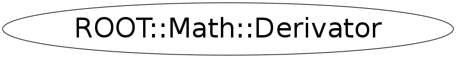

Function Members (Methods)
public:
| virtual | ~Derivator() |
| ROOT::Math::Derivator | Derivator() |
| ROOT::Math::Derivator | Derivator(const ROOT::Math::IGenFunction& f) |
| ROOT::Math::Derivator | Derivator(const ROOT::Math::Derivator::GSLFuncPointer& f, void* p = 0) |
| double | Error() const |
| double | Eval(double x, double h = 1E-8) const |
| static double | Eval(const ROOT::Math::IGenFunction& f, double x, double h = 1E-8) |
| static double | Eval(const ROOT::Math::IMultiGenFunction& f, const double* x, unsigned int icoord = 0, double h = 1E-8) |
| static double | Eval(ROOT::Math::IParamFunction& f, double x, const double* p, unsigned int ipar = 0, double h = 1E-8) |
| static double | Eval(ROOT::Math::IParamMultiFunction& f, const double* x, const double* p, unsigned int ipar = 0, double h = 1E-8) |
| double | EvalBackward(double x, double h = 1E-8) const |
| static double | EvalBackward(const ROOT::Math::IGenFunction& f, double x, double h = 1E-8) |
| double | EvalCentral(double x, double h = 1E-8) const |
| static double | EvalCentral(const ROOT::Math::IGenFunction& f, double x, double h = 1E-8) |
| double | EvalForward(double x, double h = 1E-8) const |
| static double | EvalForward(const ROOT::Math::IGenFunction& f, double x, double h = 1E-8) |
| double | Result() const |
| void | SetFunction(const ROOT::Math::IGenFunction& f) |
| void | SetFunction(const ROOT::Math::Derivator::GSLFuncPointer& f, void* p = 0) |
| int | Status() const |
Class Charts
{kind=link}
{kind=link}
{kind=link}
{kind=link}

Function documentation
Derivator()
Empty Construct for a Derivator class
Need to set the function afterwards with Derivator::SetFunction
explicit Derivator(const ROOT::Math::Derivator::GSLFuncPointer& f, void* p = 0)
Construct using a GSL function pointer type
@param f : free function pointer of the GSL required type
@param p : pointer to the object carrying the function state
(for example the function object itself)
void SetFunction(const ROOT::Math::IGenFunction& f)
SetFunction(const ROOT::Math::Derivator::GSLFuncPointer& f, void* p = 0)
double Eval(double x, double h = 1E-8) const
Computes the numerical derivative of a function f at a point x.
It uses Derivator::EvalCentral to compute the derivative using an
adaptive central difference algorithm with a step size h
double EvalCentral(double x, double h = 1E-8) const
Computes the numerical derivative at a point x using an adaptive central
difference algorithm with a step size h.
double EvalForward(double x, double h = 1E-8) const
Computes the numerical derivative at a point x using an adaptive forward
difference algorithm with a step size h.
The function is evaluated only at points greater than x and at x itself.
double EvalBackward(double x, double h = 1E-8) const
Computes the numerical derivative at a point x using an adaptive backward
difference algorithm with a step size h.
The function is evaluated only at points less than x and at x itself.
double Eval(const ROOT::Math::IGenFunction& f, double x, double h = 1E-8)
@name --- Static methods ---
This methods don't require to use a Derivator object, and are designed to be used in
fast calculation. Error and status code cannot be retrieved in this case
Computes the numerical derivative of a function f at a point x.
It uses Derivator::EvalCentral to compute the derivative using an
adaptive central difference algorithm with a step size h
double EvalCentral(const ROOT::Math::IGenFunction& f, double x, double h = 1E-8)
Computes the numerical derivative of a function f at a point x using an adaptive central
difference algorithm with a step size h
double EvalForward(const ROOT::Math::IGenFunction& f, double x, double h = 1E-8)
Computes the numerical derivative of a function f at a point x using an adaptive forward
difference algorithm with a step size h.
The function is evaluated only at points greater than x and at x itself
double EvalBackward(const ROOT::Math::IGenFunction& f, double x, double h = 1E-8)
Computes the numerical derivative of a function f at a point x using an adaptive backward
difference algorithm with a step size h.
The function is evaluated only at points less than x and at x itself
double Eval(const ROOT::Math::IMultiGenFunction& f, const double* x, unsigned int icoord = 0, double h = 1E-8)
Derivatives for multi-dimension functions
Evaluate the partial derivative of a multi-dim function
with respect coordinate x_icoord at the point x[]
double Eval(ROOT::Math::IParamFunction& f, double x, const double* p, unsigned int ipar = 0, double h = 1E-8)
Evaluate the derivative with respect a parameter for one-dim parameteric function
at the point ( x,p[]) with respect the parameter p_ipar
double Eval(ROOT::Math::IParamMultiFunction& f, const double* x, const double* p, unsigned int ipar = 0, double h = 1E-8)
Evaluate the derivative with respect a parameter for a multi-dim parameteric function
at the point ( x[],p[]) with respect the parameter p_ipar